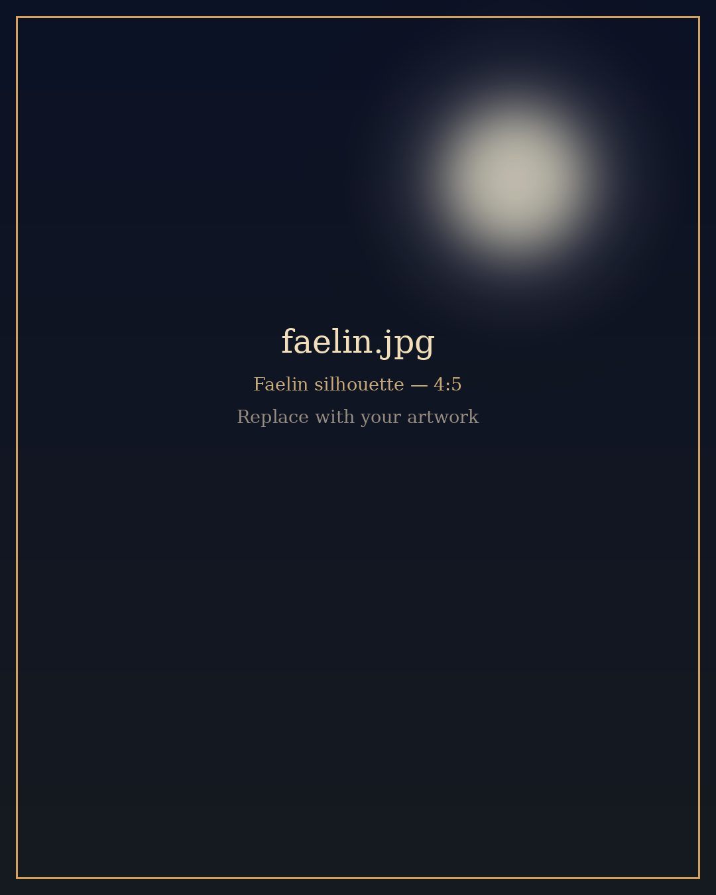
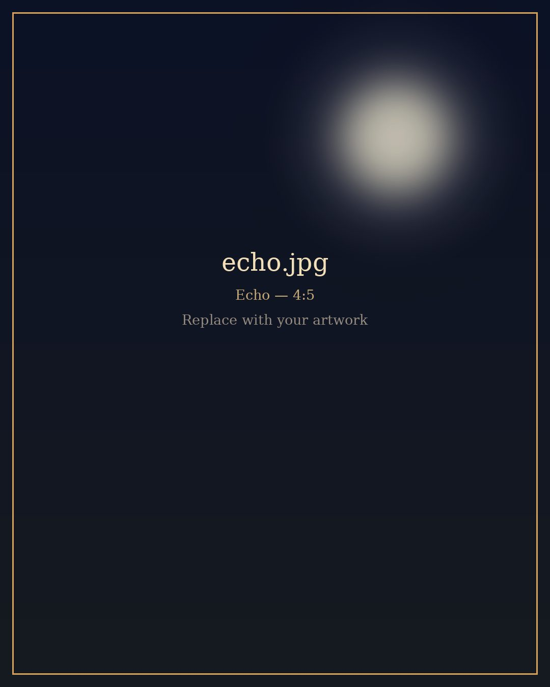
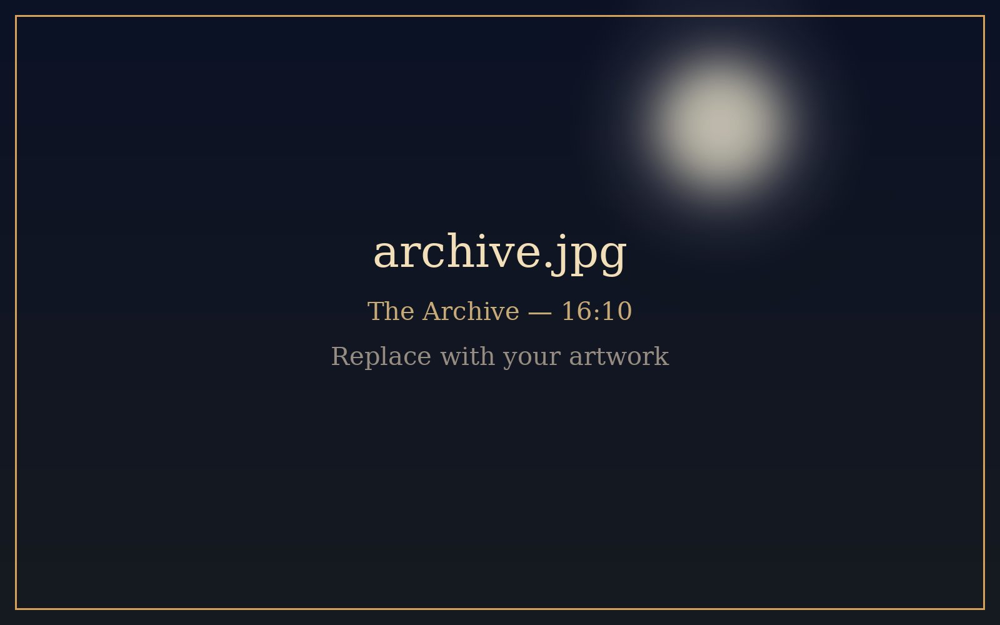

Stories kept by candlelight
Morrow and Myths
Every myth was once a guest at someone's door.
Tonight, they knock on ours.

The Taleweaver
Meet Faelin
She does not tell you her name. Not her true one, anyway.
Faelin is a Taleweaver of Veilborn descent, born of the elf keepers of knowledge and the wandering fae. Where others remember, she holds: hers is the old magic of memory, the kind that keeps a story warm long after its teller has gone quiet.
To become a Taleweaver, she made a bargain. She gave her true face and her true name to The Archive, and in return it opened its shelves to her. They are not lost, only kept, filed somewhere between the oldest scrolls and the newest ink. Someday, she means to reclaim them.
Until then, she listens. She reads. And she tells you what she hears.
- LineageVeilborn (elf & fae)
- GiftMemory magic
- Owed by The ArchiveOne face, one name

The Companion
Meet Echo
Small, brown, curly, and very good. Mostly.
Echo is descended from the Moon Hounds, spirit wolves who ran the night sky and hunted not with tooth or claw, but with their voice. A single Moon Hound's call could carry across a valley and come back carrying the truth.
In the modern world, Echo has taken a more convenient shape: a small brown toy poodle who naps on open books and growls, softly, at stories that are not quite finished being told.
When a guest arrives at The Archive, Echo always hears them first.
- LineageThe Moon Hounds
- GiftA voice that finds things
- Current formToy poodle, brown
Where the stories live
The Archive & Its Guests

The Archive is a library that remembers everything ever written down, and a few things that never were.
Its shelves have no end that anyone has found. Its candles never quite burn out. And sometimes, late at night, when Faelin is reading, the characters in her books grow restless and step off the page.
They are not villains. There are no villains here. They are guests: spirits, wanderers, tricksters and the misunderstood, each carrying a story they need someone to hear.
-
I
A page stirs
Somewhere in The Archive, a book falls open on its own.
-
II
Echo listens
The little hound's ears lift. Someone is coming.
-
III
A guest arrives
From folklore near and far, they step into the candlelight.
-
IV
The tale is told
Faelin weaves their story, and shares it with you.
The guest book
Episodes
Each episode is one guest's story. Tap a card to watch it on Facebook Reels.
Keep a candle lit
Follow the Tales
New guests arrive at The Archive often. Follow along so you are there when the next page turns.
Follow on Facebook